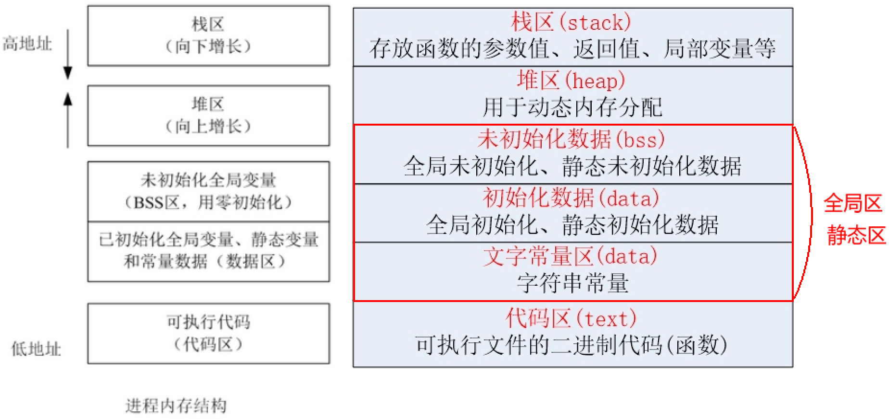
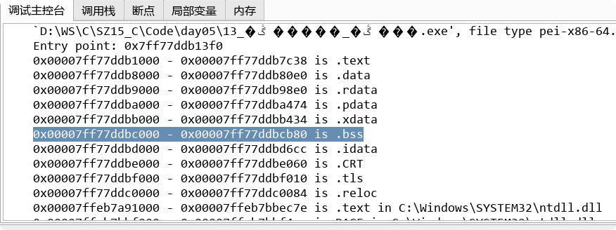

<!DOCTYPE lake>
<h1 data-lake-id="F38NK" id="F38NK"><span class="lake-fontsize-12" data-lake-id="u16771ebe" id="u16771ebe">C代码编译过程</span></h1><ul list="u7ab378f7"><li data-lake-id="uce7bb181" fid="ud29493d7" id="uce7bb181"><span data-lake-id="ub458aaa8" id="ub458aaa8">预处理</span></li></ul><ul data-lake-indent="1" list="u7ab378f7"><li data-lake-id="ua2809f53" fid="ud29493d7" id="ua2809f53"><span data-lake-id="u4775ff4f" id="u4775ff4f">宏定义展开、头文件展开、条件编译，这里并不会检查语法</span></li></ul><ul list="u7ab378f7" start="2"><li data-lake-id="u27fe0b46" fid="ud29493d7" id="u27fe0b46"><span data-lake-id="u56c293c8" id="u56c293c8">编译</span></li></ul><ul data-lake-indent="1" list="u7ab378f7"><li data-lake-id="u0fe9d583" fid="ud29493d7" id="u0fe9d583"><span data-lake-id="u0bf9e45f" id="u0bf9e45f">检查语法，将预处理后文件编译生成汇编文件</span></li></ul><ul list="u7ab378f7" start="3"><li data-lake-id="ud605fc57" fid="ud29493d7" id="ud605fc57"><span data-lake-id="ua0ffdbe4" id="ua0ffdbe4">汇编</span></li></ul><ul data-lake-indent="1" list="u7ab378f7"><li data-lake-id="u0a54e04e" fid="ud29493d7" id="u0a54e04e"><span data-lake-id="u956b4b41" id="u956b4b41">将汇编文件生成目标文件(二进制文件)</span></li></ul><ul list="u7ab378f7" start="4"><li data-lake-id="ued45de78" fid="ud29493d7" id="ued45de78"><span data-lake-id="u12ba9d47" id="u12ba9d47">链接</span></li></ul><ul data-lake-indent="1" list="u7ab378f7"><li data-lake-id="u3100da6a" fid="ud29493d7" id="u3100da6a"><span data-lake-id="u25e5dd2f" id="u25e5dd2f">将目标文件链接为可执行程序</span></li></ul><p data-lake-id="u517fb648" id="u517fb648"><span data-lake-id="u58570ea1" id="u58570ea1">参考学习讲义:</span></p><a class="yuque-card-link" href="../../%E5%B5%8C%E5%85%A5%E5%BC%8FC%E8%AF%AD%E8%A8%80%E5%9F%BA%E7%A1%80/%E4%B8%93%E9%A2%98%202%EF%BC%9E%20%E9%A2%84%E5%A4%84%E7%90%86/%E7%BC%96%E8%AF%91%E6%AD%A5%E9%AA%A4.html">yuque：yuque</a><p data-lake-id="u7f65a729" id="u7f65a729"><span data-lake-id="ueb831e49" id="ueb831e49">​</span><br/></p><h1 data-lake-id="FGXdB" id="FGXdB"><span data-lake-id="ucb9b25aa" id="ucb9b25aa">进程的内存分布</span></h1><ul list="u4e742b31"><li data-lake-id="u254b175a" fid="ua655101e" id="u254b175a"><span data-lake-id="u43c14abc" id="u43c14abc">程序运行起来(没有结束前)就是一个进程</span></li><li data-lake-id="u4e6d786d" fid="ua655101e" id="u4e6d786d"><span data-lake-id="u1114bb78" id="u1114bb78">对于一个C语言程序而言，内存空间主要由五个部分组成 代码区(text)、数据区(data)、未初始化数据区(bss)，堆(heap) 和 栈(stack) 组成</span></li></ul><ul data-lake-indent="1" list="u4e742b31"><li data-lake-id="u0fcc430e" fid="ua655101e" id="u0fcc430e"><span data-lake-id="ucef95b13" id="ucef95b13">有些人直接把data和bss合起来叫做静态区或全局区</span></li></ul><p data-lake-id="u2b0ae8cb" id="u2b0ae8cb" style="text-indent: 2em"></p><p data-lake-id="ue6ef8bc3" id="ue6ef8bc3" style="text-indent: 2em"><br/></p><p data-lake-id="ub25643cd" id="ub25643cd"><span data-lake-id="ud4c6a2ae" id="ud4c6a2ae">代码区（text segment）</span></p><ul list="u99bd5a83"><li data-lake-id="u2e675e34" fid="u3ae2ae93" id="u2e675e34"><span data-lake-id="u0f815c44" id="u0f815c44">加载的是可执行文件代码段，所有的可执行代码都加载到代码区，</span><span data-lake-id="u1e873389" id="u1e873389" style="color: #DF2A3F">这块内存是不可以在运行期间修改的</span><span data-lake-id="u60336667" id="u60336667">。</span></li></ul><p data-lake-id="u2a466035" id="u2a466035"><span data-lake-id="ud418838c" id="ud418838c">未初始化数据区（BSS）</span></p><ul list="u99bd5a83" start="2"><li data-lake-id="u69f59ce9" fid="u3ae2ae93" id="u69f59ce9"><span data-lake-id="u2f8721a6" id="u2f8721a6">加载的是可执行文件BSS段，位置可以分开亦可以紧靠数据段，存储于数据段的数据（全局未初始化，静态未初始化数据）的</span><span data-lake-id="ub0797054" id="ub0797054" style="color: #DF2A3F">生存周期为整个程序运行过程</span><span data-lake-id="u1f0c8e92" id="u1f0c8e92">。</span></li></ul><span class="yuque-card-unsupported">[codeblock]</span><p data-lake-id="u21bf1746" id="u21bf1746"><span data-lake-id="ucc4bb011" id="ucc4bb011">全局初始化数据区/静态数据区（data segment）</span></p><ul list="u99bd5a83" start="3"><li data-lake-id="u99ff62c6" fid="u3ae2ae93" id="u99ff62c6"><span data-lake-id="u5e314e9a" id="u5e314e9a">加载的是可执行文件数据段，存储于数据段（全局初始化，静态初始化数据，文字常量(只读)）的数据的</span><span data-lake-id="ud6a7be10" id="ud6a7be10" style="color: #DF2A3F">生存周期为整个程序运行过程</span><span data-lake-id="ua161f324" id="ua161f324">。</span></li></ul><span class="yuque-card-unsupported">[codeblock]</span><p data-lake-id="u001fe61c" id="u001fe61c"><span data-lake-id="u1e6cb767" id="u1e6cb767">堆区（heap）		</span></p><ul list="u99bd5a83" start="4"><li data-lake-id="ue3770e70" fid="u3ae2ae93" id="ue3770e70"><span data-lake-id="u8c443183" id="u8c443183">堆是一个大容器，它的容量要远远大于栈，但没有栈那样先进后出的顺序。用于动态内存分配。堆在内存中位于BSS区和栈区之间。</span><span data-lake-id="u02d52a14" id="u02d52a14" style="color: #DF2A3F">一般由程序员分配和释放，若程序员不释放，程序结束时由操作系统回收</span><span data-lake-id="u584cfd4d" id="u584cfd4d">。</span></li></ul><span class="yuque-card-unsupported">[codeblock]</span><p data-lake-id="ucb1ff5d9" id="ucb1ff5d9"><span data-lake-id="ua1a9f6e4" id="ua1a9f6e4">栈区（stack）</span></p><ul list="u99bd5a83" start="5"><li data-lake-id="u54127c10" fid="u3ae2ae93" id="u54127c10"><span data-lake-id="u7708af5c" id="u7708af5c">栈是一种先进后出的内存结构，</span><span data-lake-id="uc0b61c48" id="uc0b61c48" style="color: #DF2A3F">由编译器自动分配释放，存放函数的参数值、返回值、局部变量等。在程序运行过程中实时加载和释放，因此，局部变量的生存周期为申请到释放该段栈空间</span><span data-lake-id="uf454a161" id="uf454a161">。</span></li></ul><span class="yuque-card-unsupported">[codeblock]</span><p data-lake-id="u1f364f61" id="u1f364f61"><span data-lake-id="u469d9cd7" id="u469d9cd7">​</span><br/></p><p data-lake-id="ud2db444b" id="ud2db444b"><span data-lake-id="u38c9b001" id="u38c9b001">在gdb调试运行时, 可以通过</span><code data-lake-id="u29f6c476" id="u29f6c476"><span data-lake-id="u20afdae8" id="u20afdae8">info files</span></code><span data-lake-id="u7e4aa4e3" id="u7e4aa4e3">命令, 查看不同段的地址范围</span></p><p data-lake-id="u1a5ed7e6" id="u1a5ed7e6"></p>